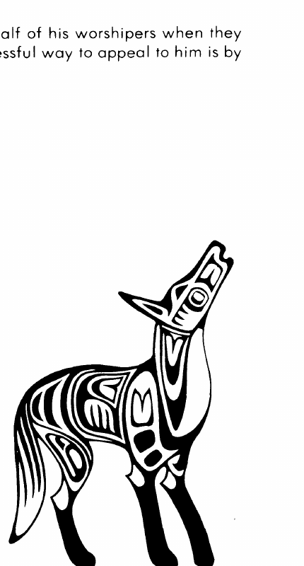

北美印第安神话 · American Indian Mythos
北美印第安神祇与自然保持紧密联系，往往以当地动物或自然力量的形态出现。控制某件事物的仪式要求牧师手中已有它的一部分：召雨要把水洒在地上，针对某个生物施法要拥有它的毛发、旧衣物等。名字也很重要；不知道牧师的真名，魅惑法术不会对其生效。涉及恶魔或魔鬼的仪式，则必须以大火控制生物。
部族仪式随季节展开，换季时会烧掉食物、精美饰品和战斗中使用过的武器，作为来季的祭品。牧师每天冥想，年长者会请求部族神祇帮助部落作战；年轻牧师则与战士并肩战斗。牧师居住的帐篷或小屋对部落其他人禁入，由强大的部族灵魂守卫。
圣物包 · Sacred Bundle
部族牧师和被召来的印第安灵魂可以帮助战士制作圣物包。包中放入 5–10 件由灵魂挑选的圣物，例如巨蛇洞穴中的响尾蛇、巨鹰巢中的羽毛，或战斗中杀死的十三个敌人的头发。完成收集后，祭司必须把最后一件物品换成自己需要的东西。
圣物包使持有者所有豁免获得 +2；只有掷出 1 才会被突袭；护甲等级为 2；战斗中对每个伤害骰减 1 点。
乌鸦 · Raven
乌鸦是改变形态的诡计者，被认为参与创造和改造世界。它能随意变形为乌鸦、狐狸、松鸦或月鸟，通常只在最后关头化为巨鸦战斗；它也被视为给人类带来食物与火的伟大供给者。想求它帮助，最有效的献礼是食物。
| 属性 | 数据 |
|---|---|
| AC / 移动 / HP | 0 / 24 英寸 / 400 |
| 攻击 | 3 次；3–18、3–18、3–30 |
| 特殊 | 令他者变形（−3 豁免）；自我变形 |
| 抗魔 / 阵营 / 位面 | 75% / 混乱善良 / 空气元素位面 |
| 牧师／德鲁伊 | 各 12 级 |
| 战士 / 魔法师 / 盗贼 | 游侠 10 级 / 各 16 级 / 盗贼 14 级 |

郊狼 · Coyote
郊狼教人艺术、工艺、光与火，却主要是欺凌、贪婪的混乱诡计者。它可以每天变形一次，但只限于动物形态；受困时会以 3–30 点伤害撕咬。它的信徒常祈求盗窃和幻术火焰、光明或黑暗的技巧。

赫斯特尔齐 · Hastseltsi
这位中立弱等神以红色装备现身，骑一头巨大的栗色动物。他的战斧为 +3 武器，飞射物和空中攻击无法伤害他；投掷刀为 +2 武器。牧师常以奔马象征他。
哈斯特泽尼 · Hastsezini
这位守序邪恶的弱等神居住于火元素位面，周身火焰使 10 码内生物每轮受到 2–20 点伤害。他使用无法被他者持握的 +5 盾牌、火焰弓和火焰长矛；受到重压时可以像 30 级施法者一样使用火焰法术。
亨格（雷灵）与霍托鲁（风神） · Heng与霍托鲁 Hotoru
亨格掌管雨水与幸运，能以雷电攻击；祭司会把大量水洒在地上吸引他。霍托鲁可化为附近村落首领，能每轮发射三道闪电，并常受农作物与天气需要影响。
夏瓦克 · Shakak
这位混乱邪恶的强大神能召来寒冷天气；其冰制长矛每击造成 3–30 点伤害，身体周围 30 码内的生物每轮受到 20 点寒冷伤害。火焰对他有 90% 抗性，体温低于冰点时每轮再生 10 点生命值。
雷鸟、石肋与雅瑙鲁哈 · Thunder Bird、石肋 Stoneribs 与雅瑙鲁哈 Yanauluha
雷鸟是独一无二的巨鸟，以喙和翅膀攻击并释放闪电；它常预警重大灾难，从不因召唤而来，而是按自己的意志出现。石肋是能变成比目鱼、缩小体型的英雄，以弓或棍战斗。雅瑙鲁哈是最初的部族牧师，能召来本神话体系中的任何灵魂；祭司在需要特殊援助时会召唤他。

图腾与专名 · Symbols and Names
其他英雄与神祇包括 Hiawatha（海华沙）、Qagwaaz（卡格瓦兹）、Snake-Man（蛇人）和 Tobadzistsini（托巴齐斯齐尼）等英雄或神祇。